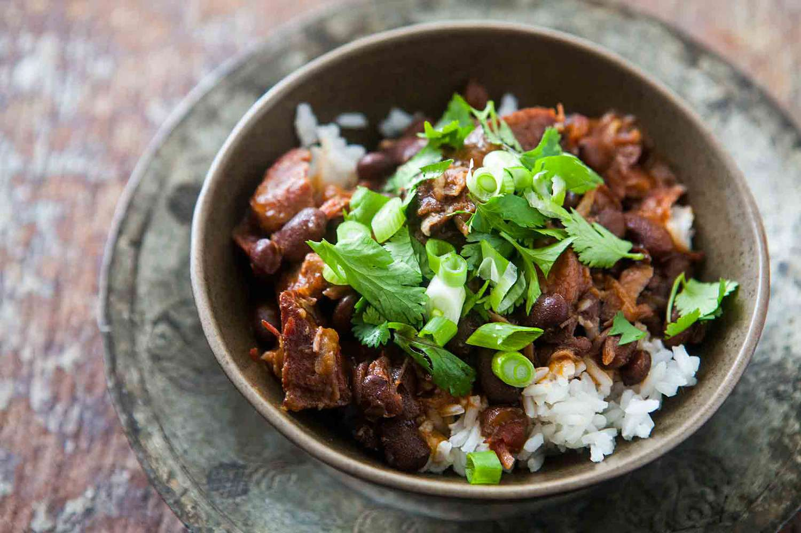

FEIJOADA

INGREDIENTS
- 1 pound black beans, rinsed and sorted
- 1 pound bacon, chopped
- 1 pound pork shoulder, chopped
- 1 pound smoked sausage, sliced
- 2 onions, chopped
- 4 garlic cloves, minced
- 2 bay leaves
- 1 tablespoon olive oil
- Salt and black pepper to taste
INSTRUCTIONS
- In a large pot, cover the black beans with water and soak overnight.
- In a large frying pan, cook the bacon over medium heat until crispy. Remove and set aside.
- In the same pan, cook the pork shoulder until browned. Remove and set aside.
- In the same pan, cook the sausage until browned. Remove and set aside.
- In the large pot with the soaked beans, add the bacon, pork shoulder, sausage, onions, garlic, bay
leaves, olive oil, salt, and black pepper. Add enough water to cover the ingredients by 1 inch.
- Bring the mixture to a boil over high heat. Reduce the heat to low and let simmer for 2-3 hours or until
the beans are tender and the meat is falling apart.
- Skim any excess fat from the top of the feijoada and discard the bay leaves.
- Serve hot with rice, collard greens, and orange slices. Enjoy!